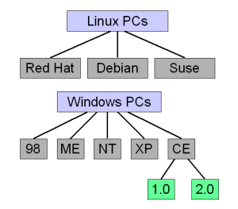
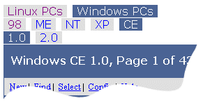
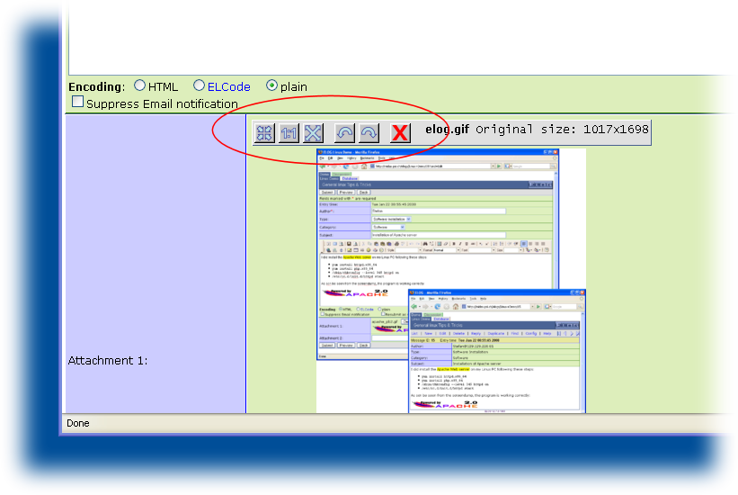
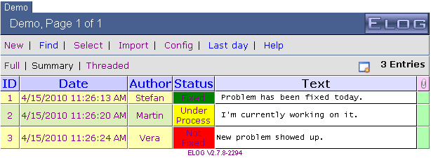
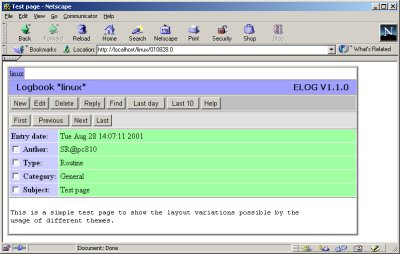
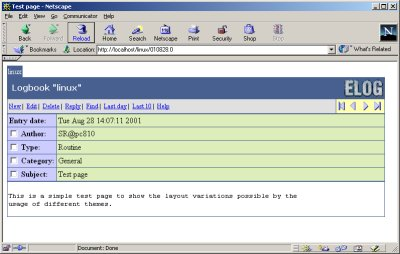
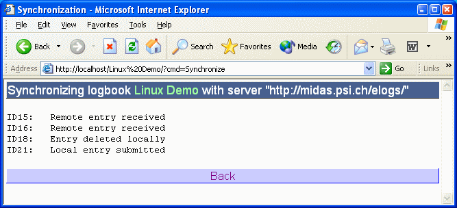

The configuration file elogd.cfg contains entries
which define the structure of logbooks and the behaviour of
elogd. The file has a simple ASCII format. Each
logbook is defined by a [<name>] section where
<name> is the name of the logbook. The [global]
section is used for settings common to all logbooks. Each line contains a
setting name, followed by an equal sign and the value for this setting.
Lines starting with ";" are treated as comments.
Here is a simple example, which define two logbooks, "Linux" and "PC":
[global] SMTP host = mailsend.your.domain [Linux] Theme = default Comment = General linux tips and tricks Attributes = Author, Type, Category, Subject Options Type = Routine, Software Installation, Problem Fixed, Configuration, Other Options Category = General, Hardware, Software, Network, Account, Other Options Author = Stefan, Linus, unknown Required Attributes = Author [PC] Comment = Database PC installations Attributes = Location, OS, Owner Options Location = Building1, Building2 Options OS = Linux, Windows ME, Windows 2000 Required Attributes = Location, Owner Email All = name@address, othername@otheraddress Use Mail Subject = Location
The notation of the following options is such that items enclosed by "<" and ">" should be replaced by a specific string. If a value contains blanks (like a complete sentence), it should not be enclosed in quotation marks.
If a setting has a number of possible options, they are shown in the form
option1|option2|..., meaning that one of the options
(without any vertical bar) should be used. The following options are
specific to the [global] section:
Port = <port>SSL = <0 | 1>https://... to the elogd daemon. If the
URL = directive is used, make sure to use
https://... instead of http://...
there. The ELOG distribution contains a simple self-signed certificate
in the ssl subdirectory. One can replace this
certificate and key with a real ceritficate to avoid browser pop-up
windows warning about the self-signed certificate. The default for
this option is 0.
Resource dir = <directory>-s flag when starting elogd. If not specified, use
the directory where the configuration file
elogd.cfg resides. Changing this option requires
a restart of the elogd server.
Logbook dir = <directory>-d flag when starting elogd. If not specified, use
the directory where the configuration file
elogd.cfg resides. Each logbook data is stored in a
separate directory under this root directory specified by the
Subdir option. Changing this option requires a
restart of the elogd server. This directory also contains any
password file and user HTML file.
Language = <name>elogd output. Not affected by this setting are the
configuration file options and the commands specified with the optional
Menu commands and List menu
commands, which have to be specified in English and are
translated automatically by elogd. The attribute names are unaffected
by the language setting and have to be translated manually.elogd is contained in the file
eloghelp_xx.html where xx are the first two
letters of the language (like "en", "ge" and
"fr"). For new languages, a new file of that type must be
created as well.
charset = <name>elogd. Can be used to switch to Russian or Asian
fonts.
Logbook Tabs = [0|1]1
Main Tab = <string>string is used for the contents of the tab.
Main Tab URL = <string>Welcome Title = <html code><img
src="welcome.gif">. These images must be stored in the
resource directory or in the theme directory.Welcome title = <img src="welcome.jpg"><p><font size=5 color=white>Welcome to our Elog</font>
Page title = <string>Page title in the
[global] section is used for the logbook selection
page.
List page title = <string>Selection page = <file>"/" (Unix) or "\"
or "x:" (Windows).elogd can be used.
Guest Selection page = <file>Protect Selection page = 0 | 11. Default is 0.
It is necessary to put the Password file = ... into
the [global] section of the config file for this to work.
Expand Selection page = 0 | 11.
SMTP host = <host.domain>SMTP username = <username>SMTP
password can be created or modified via the
-t switch when starting elogd. This is necessary
since the password is encrypted. To set your SMPT password, enter on
the command line:
elogd -t <your password>
Logfile = <file>logging level (see below) is larger than 1,
also read and write accesses can be logged.
Logging level = 1 | 2 | 3URL =
<http[s]://host.domain[:port]/[subdir/]>elogd runs with SSL enabled
elogd runs under a proxy
then the URL under which elogd is running has to
be specified manually with this statement. The URL has to contain the
port number if not the standard port 80 is used or 433 for SSL,
and it has to contain the directory if used under a proxy like
URL = http://host.domain:8080/
|
if running on port 8080 |
URL = https://host.domain/
|
if SSL is enabled (SSL = 1) |
URL = http://host.domain/subdir/
|
if running under a proxy |
Relative redirection = 0|1Relative redirection = 1,
relative redirection is used. This uses the current URL from the browser,
whatever it is, and only specifies the last part of the URL. It should
noted however that relative redirections are not allowed in the HTTP
standard, but most browsers support it anyhow. Problems have been reported
with the Safari browser. So this option should only be used when it is
really needed.
Usr = <name>
Grp = <name>Resolve host names = 0|1hosts allow/deny options are used with host names,
this setting must be set to 1. If turned on, the DNS server is
contacted on each HTTP request to elog, which can slow down the server
considerably for slow DNS servers.
If installations have very many logbooks, it can be hard to navigate between them. To make things more structured, it is possible to build a hierarchy of logbooks. A logbook group can contain any number of logbooks as well as other logbook groups. The hierarchy is defined with the the option
Group <group name> = <Logbook1>, <Logbook2>,
<other group>
in the [global] section of the configuration file.
To define following logbook hierarchy:

one would use following statements:
[global] Group Linux PCs = Red Hat, Debian, Mandrake Group Windows PCs = 98, ME, NT, XP, CE Group CE = 1.0, 2.0

Where the selected group or logbook becomes blue. The lower groups/logbooks change according to the selected upper group. Please note that a logbook can be contained in more than one group, but then it should not be the first logbook in those groups. The colors of the tabs and the title bar can be specified in the CSS file.
Sometimes groups of logbooks should be completely separate. Imagine two
groups of logbooks, one for the engineering department and one for the
administration department. These groups should have different
administrators, and the logbook tabs at the top of the screen should not
show the logbooks from the other department. Prior to ELOG version 2.4.1,
one had to run two elogd servers in parallel, listening under different
ports. Since 2.4.1, one can achieve the same behaviour using Top
groups. The configuration could look like this:
Group Linux PCs = Red Hat, Debian, Mandrake Group Windows PCs = 98, ME, NT, XP, CE Group CE = 1.0, 2.UL Top group engineering = Linux PCs, Windows PCs Top group administration = Employees, Purchases [global engineering] Password file = engineers.pwd Admin user = stefan [global administration] Password file = admin.pwd Admin user = bill
[global] section for each
top level group of logbooks. The rule is that a configuration setting in an
individual logbook section overrides a setting in the [global
<top group>] setting, which by itsel overrides a setting
in the [global] section. This way one can define
settings for all top level groups (such as the SMTP host) in the
[global] section, and define different password files
and administrators in the individual top level group sections.http://your.host:8080/, this URL becomes invalid for
top groups, to avoid the case that one group can "see" the logbooks of the
other groups. Instead, one has to append the top group name to the URL,
such as http://your.host:8080/engineering or
http://your.host:8080/administration. If someone does
not know the top group name, one cannot see the list of logbooks there, so
the groups become completely independent of each other. If this feature is
not wanted, it can be disabled by setting Show top groups =
1.
For each logbook, there is a section with the logbook name in square
brackets, so that each logbook can have different options. If an option
is not present in a logbook section, then the system tries to locate that
option in the [global] section. Thus if the following
options are placed in the [global] section, they are
defaults for all logbooks. If they are present in the
[global] and in the logbook section, the logbook
option is used.
Here are the available options, by broad categories:
Data dir = <directory>Subdir = ... instead.
Subdir = <directory>elogd
program. The subdirectory is relative to the logbook root directory
specified with the Logbook dir = ... option. So if
Logbook dir = /usr/local/elog/logbooks and
Subdir = Demo then the logbook data is stored in
/user/local/elog/logbooks/Demo. If the
Logbook dir = ... option is not specified, then
logbooks is used. If the subdirectory starts with a
"/" ("\" under Windows), then it is used as an absolute path
independent of the logbook dir. To see which directories are used,
start elogd with the "-v" flag.
Comment = <comment>Theme = <theme>CSS = <filename>CSS = <file1>&<media1>,<file2>&<media2>. This will then be translated into separate style sheet
statements for the different media. For example a statement
CSS = default.css&screen,print.css&print
will result in the HTML statements:
<link rel="stylesheet" type="text/css" href="default.css" media="screen">
<link rel="stylesheet" type="text/css" href="print.css" media="print">
Title image = <string><img border=0 src="elog.gif" alt="ELOG logo">
This code can be replaced by <string> to
display a different icon file, or to display some text. The icon
image has to be present in the theme directory, which is usually
<elog root>/themes/default.
Title image URL = <URL>elog.gif icon in the theme directory. This option
should only be used if the Title image option is
not used.
Time format = <string>Time format <attribute> = <string>Date format = <string>Date format <attribute> = <string>Welcome Page = <file><h1>Welcome to the test logbook</h1> <ul> <li><a href="?cmd=new">Enter</a> a new message <li><a href="?cmd=find">Search</a> the logbook </ul>The file must be present in the resource directory. Alternatively, an absolute path can be used if the file name starts with a
"/" (Unix) or "\" or
"x:" (Windows).
Start page = <command>command can be either 0?cmd=Last to display
the last message, or any other ELog menu command in the form
?cmd=xxx. To start with the search page, one uses
Start page = ?cmd=FindPlease note that if another language than English is selected via the Language = xxx option, the commands have to be in that language as well (like "Start page = 0?cmd=Letzter" for German).
Submit Page = <file><h1>You successfully submitted a message</h1> <a href="?cmd=Back">Back</a> to the logbook<p> <a href="?cmd=New">Enter</a> another messageThe file must be present in the logbook directory. Alternatively, an absolute path can be used if the file name starts with a
"/" (Unix) or "\" or
"x:" (Windows).
Message comment = <comment>Reply comment = <comment>Attachment comment = <comment>Menu commands = <list>language = ... setting, and are automatically
translated into the specified language.Menu commands = List, New, Edit, Delete, Reply, Duplicate, Find, Config, Help
Copy to = <logbook list>
Move to = <logbook list>Copy to and Move
to make it possible to copy or move a logbook entry from one
logbook to another. By default, all logbooks except the current logbook
are shown as a possible destination. With the configurations options
Copy to = <logbook list> and Move to
= <logbook list> it is possible to specify a list of
destination logbooks, separated by commata. This can make sense if only
certain logbooks make sense as destinations. The flag Preserve IDs
can be used to keep the entry ID in the destination logbook.
List Menu commands = <list>New, Find, Select, Import, Config, Admin, Change
password, Logout and Help make sense.
The command Select can be used to select multiple
messages for deletion or for moving to other logbooks. Once the
Select command is clicked, check boxes appear in
front of all entries which let the user select one or more entries. A
new menu bar shows up with a Delete and optionally
a Coyp to ... and Move to ...
button, if these commands are present in the Menu
commands list. Pressing one of these buttons deletes, copies
or moves all selected logbook entries.
Guest Menu commands = <list>Menu commands = List, New, Edit, Reply, Duplicate, Find, Config, Logout, Help Guest menu commands = List, Find, Login, Help
Note that the presence of this option opens user access also to the
find result or elog listing page, which usually contains some config
command. So it is useful to combine the Guest menu
commands option with the following Guest List
Menu commands option to restrict the access to the find
result page as well.
Guest List Menu commands = <list>Menu text = <file><small> <a href="?cmd=next&type=Routine">Next Routine entry</a> | <a href="../?Type=Routine">All Routine entries</a> </small>
List Menu text = <file>Filter Menu text = <file>Guest Display = <list>list consists of comma
separated attributes, including the word text, if one wants to
display the entry body text for guests.
<small> <a href="?mode=summary">Summary</a> | <a href="?mode=full">Full</a> | <a href="?mode=threaded">Threaded</a> | </small>
Top text = <file> | <string>"/" (Unix) or "\" or
"x:" (Windows).
Bottom text = <file> | <string><center><a href="/">Main page</a></center>Or it can contain other useful links. If a file is specified, it must be present in the logbook directory. Alternatively, an absolute path can be used if the file name starts with a
"/" (Unix) or
"\" or "x:" (Windows).
Bottom text login = <file> | <string>Bottom text but for the login page. This
allows to display a different text at the bottom of the login page. It
can also be used to execute some JavaScript.
Help URL = <URL>Help URL option to specify
different help pages for different logbooks. It can point to a
site-specific help page via http://... or to a
local file like file://c:/tmp/config.html, or to
the name of an HTML file which must be present in the resource
directory.
Message Width = <number>Message Width
and Message Height are not given, some JavaScript
code is used which automatically resizes the message window
dynamically to fit optimally into the browser window.
Message Height = <number>Message Width
and Message Height are not given, some JavaScript
code is used which automatically resizes the message window
dynamically to fit optimally into the browser window.
Admin textarea = <cols>,<rows>Display mode = [full|summary|threaded]Entries per page = <number>Restrict edit time = <hours>Max content length = <bytes>Fonts = <list>Fonts = Arial, Comic Sans MS, Courier New, Tahoma, Times New
Roman, VerdanaAll display limit = <n>500.
Thumbnail size = <size>size gets passed to the -thumbnail
option of the conversion. A value of 300 converts
all pictures to thumbnails 300 pixels wide. A value of
300> converts all pictures to thumbnails 300
pixels wide if they are larger than 300 pixels initially, and leaves
them untouched if they are smaller. A value of 10%
converts all pictures to 10% of their original size. If the
thumbnail size option is missing, the thumbnails will be created
with the original image size, and can then be resized and rotated
interactively with the image manipulation buttons:
Setting Thumbnail size = 0 turns off the thumbnail
creation.
Thumbnail options = <options>
Attributes = <list>
since these are used internally by elog.
Options <attribute> = <list>Options town = San Francisco, "Paris, Texas", "Paris, France"
Extendable options = <list>Options <attribute> to specify
a list of possible options, this list is fixed. Sometimes it is
desirable to extend the list when a new entry in a logbook is made and
a certain option is missing on the list. By adding the attribute name
to the Extandable options list, a button appears
next to the attribute in the message entry form which lets you add new
options to the list. The elogd.cfg configuration file is then
automatically updated. When a new logbook entry gets made, the new
option automatically appears in the drop-down box for that attribute.
ROptions <attribute> = <list>Options above, but using radio buttons
instead of a drop-down box.
MOptions <attribute> = <list><value1> | <value2> | ...In the "find" page only one of these values can be specified, which is then treated as a substring in the search filter.
IOptions <attribute> = <list>Attributes = Author, Icon, Subject... IOptions Icon = icon1.gif, icon2.gif, icon3.gif, ...New icons are welcome and should be sent back to the author to be incorporated in the next version.
Comment <attribute> = <comment>Tooltip <attribute> = <comment>Comment <attribute>, except that the
comment gets displayed as a tooltip (tiny pup-up window) when the user
moves the mouse cursor over the attribute name in the entry form.
Tooltip <attribute> <attribute option> = <comment>Tooltip <attribute>, but for option
values of a MOptions attribute. Using this option,
a different tooltip can be shown above each check box of an optional
value for an attribute. Please note that attributes or options with
spaces should not be enclosed with quotes.
Icon comment <icon> = <comment>Options <attribute> = booleanPreset <attribute> = <string>Preset Author = $long_nameIf the attribute should be locked at the Web submission, use the "Locked Attributes = ..." option. If a preset value is given for an attribute which has an options list, the preset value is selected in the drop down box by default.
Preset text = <string> or <file>"/" (Unix) or "\" or
"x:" (Windows).
Preset on edit <attribute> =
<string>Preset <attribute>, but evaluated when
editing existing entries.
Preset on reply <attribute> =
<string>Preset <attribute>, but evaluated for
replies.
Preset on first reply <attribute> =
<string>Preset on reply <attribute>, is
evaluated for any replies, this one is only executed for the first
reply to an entry. It can be useful for example to so do something
like this:
Preset on first reply Subject = Re: $SubjectSo the "Re:" only gets added once, and you don't get long chains of "Re: Re: Re: ....".
Preset on duplicate <attribute> =
<string>Preset <attribute>, but evaluated for
duplicted entries.
Locked Attributes = <list>Fixed Attributes Edit = <list>Edit button. This feature can
be useful to preserve the original author of the message, when using
the Preset Author = $long_name option as described
above.
Fixed Attributes Reply = <list>Reply button. This feature
can be useful to preserve the original subject of a message for
example.
Required Attributes = <list>Show Attributes = <list>Change <attribute> command.
Show Attributes Edit = <list>Show Attributes, but for the entry form.
Propagate Attributes = <list>Page title = <string>Edit Page title = <string>List display = <list>ID for the entry ID
Date for the entry date/time
Edit to display a column with an edit icon to
directly edit and entry
Delete to display a column with a delete icon
to directly delete and entry
List display = ID, Date, <all attributs>Which displays the message number, date, and all attributes. The display of the message body is controlled by the
Display mode and
Summary lines options. If a search goes over "all
logbooks", an additional colums with the logbook name of each entry is added in
front.
Guest List display = <list>List display, but for guest access (user
level access with password, but not logged in). Please see also
Guest display. In addition to List
display, one can optionally specify Text
as an attribute here. Without that attribute, the summary text of the
entry body is not shown. This makes it possible to show the text for
registered users and hide it for guest access.
Link display = <list>Thread display = <string>Thread display = $subject, posted by $author on $entry time
Thread icon = <attribute>RSS Title = <string>RSS Title = $subject, posted by $author on $entry time
RSS Entries = <n>Subst <attribute> = <string>elogd is
running
Subst Author = $author from $remote_host
Subst Info = $shell(cat /tmp/filename) (Unix) Subst Info = $shell(type c:\tmp\filename) (Windows)
Subst Number = XYZ-#####results in automatically created attributes "Number" of the form
XYZ-00001 XYZ-00002 XYZ-00003and so on. In addition to the #'s one may specify format specifiers which are passed to the strftime function. This allows to create tags wich contain the current year, month and so on. Once the date part of the attribute changes, the index restarts from one. The statement
Subst Number = XYZ-%Y-%b-###results in automatically created attributes "Number" of the form
XYZ-2005-Oct-001 XYZ-2005-Oct-002 XYZ-2005-Oct-003
XYZ-2005-Nov-001 XYZ-2005-Nov-002
Remove on reply = <list>Quote on reply = 0 | 1Reply string = <string>">
". Can be empty string ("") if no message marking is
desired.
Subst on reply <attribute > =
<string>Subst on reply subject = Re: $subjectNote that this option works only for the first reply. So a reply-to-a-reply would still have Re: <old subject> and not Re: Re: <old subject>. If you want the substitution for all replies, please use
Preset on reply instead.
Subst on edit <attribute > =
<string>Subst on edit author = $full_name
Quick filter = <list>Attributes
= list, the attribute Date and the
option Subtext can be listed here. Using the
Date filter, the last day, week, month and so on
can be displayed. The Subtext filter works on the
entry body text.
Format <attribute> =
<flags>,<css_class_name>,<css_class_value>,<width>,<size>Values used for single message display page:
Values used for new message entry form:
Default is "0, attribname, attribvalue, 80, 500". Trailing parameters can be ommitted, so specifying for example only the flags is possible.
Type <attribute> = date | datetime | numeric |
userlist | useremail | muserlist | museremaildate are treated as a date.
Their format for display can be controlled by the Date
format option. Upon entry, drop-down boxes are displayed
which let the user select the day, month and year. Alternatively, a
pop-up date picker using a calendar can be displayed if JavaScript is
enabled. Date attributes are saved internally as seconds since
1.1.1970, and can therefore be sorted propoerly by clicking on the
header of a logbook entry list. On the find page, dates can be searched
for via a start and end date. If date attributes are used in a quick
filter (see above), a drop-down quick filter box is displayed which
lets the user select "last day", "last week", "next week", and so on.
The datetime type combines a date and time in
HH:MM. The output of this combination is controlled by the
Time format option.userlist, a drop-down box
is displayed which contains all user names from the current password
file. This can be useful for example in a bug tracking system, where a
new entry gets assigned to an individual. The type
useremail is similar, just a list of email addresses
of all registered users. This can be used to send email notification
to assigned people by using this attribute in an
Email all = <attribute> statement. The type
muserlist and museremail are the
same that userlist and useremail,
except that several user names or user emails can be selected at once
using check boxes.
Style <attribute> <value> = <style>importnace and you want to highlight
all entries where importnace is severe
for example, you can specify following style:
Style importance severe = background-color:red
For possible formattings, please refer to some CSS documentation. You can
change the colors, font styles and sizes. The style is then valid for the
whole row of that entry.
Style importance "" = background-color:red
Cell Style <attribute> <value> = <style>
Attributes = Author, Status
Options Status = Fixed, Under Process, Not Fixed
Cell Style Status Fixed = background-color:green
Cell Style Status Not Fixed = background-color:red
Cell Style Status Under Process = background-color:yellow
for example produce following listing:
Change <attribute> = <string>http://any.company.com/telbook.cgi?search=<name>where <name> has to be replaced by a search string. Now one can construct an automatic telephonebook lookup with following options:
Attributes = Name, Telephone, ... Display Telephone = <a href="http://any.company.com/telbook.cgi?search=$Name">$Name's telephone number</a>The attribute
Telephone is now automatically
constructed from the attribute Name and consists of a link
to the company's telephonebook. The advantage of this system is if the URL of
the telephonebook changes one day, only one statement in the config file has to
be changed, while otherways (like with the Subst Telephone =
... option) all entries would have to be changed manually.
List Change <attribute> = <string>Execute new | edit | delete = <command><command> can contain
substitutions similar to the Subst command. In
addition the list of all attachments can be referred to via
$<attachments>. The text body of the entry
can be referred to with $text. It should
be noted that only the first 1500 characters of the text can be used,
in order not to exceed the limits of the shell. Following (Unix) command
writes a notification into some file:
Execute new = echo "New message wiht ID $message id of type $type from $long_name on $remote_host" >> /tmp/elog.log
Config
command of elogd, that person can put malicious code into elogd.cfg and
execute it. This is even more severe if elogd runs with root
privileges. To avoid such problems, the execute facility is disabled in
elogd by default and has to be enabled explicitly with the "-x" command
line flag. The administrator has to ensure then of course that only
trusted people can edit elogd.cfg.
Last submission = <string>$entry time by $author. If a logbook does not
contain an author attribute, another string can be
chosen.
ID display = <string>ID display = TAG-$message id
Prepend on reply = <string>Prepend on reply = Added $date by
$long_name\n\nAppend on reply = <string>Prepend on edit = <string>
Append on edit = <string>Sort Attributes = <list>When entering data into a elog form, it might be helpful to change the options of the attributes depending on the value of other attributes. Let's assume you have a logbook containing entries for different computers with different operating systems. Your elogd.cfg file starts like that:
Attributes = PC Name, Operating System, Version Options Operating System = Linux, Windows
For the operating system version, you would like a list, but this list has to be different for Linux and Windows. This can be achieved with conditional attributes. Simply write following configuration:
Attributes = PC Name, Operating System, Version
Options Operating System = Linux{1}, Windows{2}
{1} Options Version = 2.2, 2.4, 2.6
{2} Options Version = ME, 2k, NT, XP
If you enter a new entry into that logbook, the drop-down list for
Version changes automatically depending on the
Operating System. Note that you have to enable Java
Script for this to work. Without Java Script, a separate button appears
in the line of the Operating System which has to be pressed to make the
Version list change.
The number {1} and {2} in the configuration file are called conditions. Depending on these conditions, certain other lines can be activated. So if the Operating System Linux is selected, condition {1} is true, which selects the line starting with {1} to select the options 2.2, 2.4, 2.6.
This technique offers various other possibilities, since any
configuration option can be made conditional by adding a
{<n>} in front of that line where <n> is
an arbitrary number. One often used possibility is the definition of
forms. Depending on an attribute, the configuration option
Preset text = ... can be used to copy some
pre-defined forms into the message body, which can then be filled out.
Consider following example:
Attributes = Author, Type
Options Type = Network check{1}, System check{2}
{1} Preset text = network.txt
{2} Preset text = system.txt
This causes two text files network.txt and system.txt to be copied into the message body when a new entry is made. The file network.txt could look like:
Routers checked: [ ] DHCP checked: [ ] Comment: ...
This works like a pre-defined form, the user puts X's between the "[ ]" when that item has been checked. Other possibilities are pre-defined shift sheets in environments where elog is uses as a shift logbook. The shift sheet could contain the names of the shift crew, some check-list for standard tasks etc.
Another use of conditional attributes is in conjunction with the option
Message comment. Depending on some attribute values,
different message comments can be displayed to tell the user what to enter
exactly in the message body for that attribute value.
Show Attributes Edit = <list>
When using conditional attributes, it might be necessary to omit certain
attributes under certain conditions, to make the input mask shorter and
maybe change the order of the attributes. With this option, a subset of
all attributes can be specified which get displayed on the single entry
page in the same order as they are specified here. This option mainly
makes sense when used with conditions, such as:
Attributes = PC Name, Operating System, Version, Distribution
Options Operating System = Linux{1}, Windows{2}
{1} Show Attributes Edit = Operating System, Distribution, PC Name
{2} Show Attributes Edit = Operating System, PC Name, Version
The above statements cause the atrribute Version to be
only visible when "Windows" is selected, and
Distribution to be only visible when "Linux" is
selected. If "Windows" is selected, the PC name is shown before the
version.
It is possible to define conditions in more than one options list. The only requiremnt is that conditions are uniquie, meaning that a condition in one option list cannot be used in another list. This can easily be avoided by using numbers for one condition and letters for the other condition, like in the following example:
Attributes = PC Name, Operating System, Version, Location, Floor
Options Operating System = Linux{1}, Windows{2}
Options Location = Main Building{a}, New Building{b}, Old Building{c}
{1} Options Version = 2.2, 2.4, 2.6
{2} Options Version = ME, 2k, NT, XP
{a} Options Floor = Ground, First, Second
{b,c} Options Floor = Ground, First
It is possible to specify an OR of several conditions like in the case {b,c}. This is also possible over several conditions, like {1,a} would mean "The PC has Linux or is in the Main Building". To specify a AND between conditions, a "&" is used. The condition
{1&a} ...
specifies for example the condition "Linux AND Main Building". If several lines with condition combinations are true, the upper one is used.
Conditional attributes are usually only used for change items
in the entry form. It might however be desirable to have conditional
attibutes also working in the list display (the page where several
entries are shown on a single page). The value of one attribute can then
for example change which other attributes gets displayed via the
list display option. To enable the evaluation of conditional
attributes for the list display, on uses the option
List conditions = 1It should be noted that this option can cause a significant performance degradation if many conditional attributes are defines, so it should only be turned on when it is really needed.
Note: Starting with version 2.9.0, the password level access using the options Read password, Write password and Admin password is not supported any more. Please use the user level access as described below.
Access control is done on a user level with a password file. When a user logs in, a session ID is created and placed as a "cookie" in the browser. Using this cookie, the user can workin on the logbook until the cookie expires. For this it is necessary that cookies are enabled in the browser.
Following options can be used to control the behavior:
Password file = <file>
Login expiration = <hours>
Admin user = <user list>
Login user = <user list>
This file contains user names and passwords in XML format, such as
<?xml version="1.0" encoding="ISO-8859-1"?>
<!-- created by MXML on Tue Nov 07 08:15:51 2006 -->
<list>
<user>
<name>stefan</name>
<password encoding="SHA256">Ebx/a.9tFFQ/iUW3mU8GbnPpCVk74jFt56CmiJXVwdm</password>
<full_name>Stefan Ritt</full_name>
<last_logout>Tue Oct 17 12:59:47 2006</last_logout>
<last_activity>Tue Nov 07 08:15:51 2006</last_activity>
<email>stefan.ritt@psi.ch</email>
<email_notify>
<logbook>demo</logbook>
</email_notify>
</user>
<user>
<name>midas</name>
<password encoding="SHA256">t56CmiJXVwdmEbx/a.9tFFQ/iUW3mU8GbnPpCVk74jF</password>
<full_name>Midas User</full_name>
<last_logout>0</last_logout>
<last_activity>0</last_activity>
<email>midas@psi.ch</email>
<email_notify>
<logbook>demo</logbook>
</email_notify>
</user>
</list>
The passwords are encoded. New users can either be created by hitting
Register as new user on the login page if Self register =
1 in the configuration file, or by the admin user in the
Config page by pressing New user. The password file resides
in the same directory as the logbooks. When a user is logged it,
the entry for this user can be modified via the Config command.
To start a new password file, follow these steps:
Password file =
<file> in the configuration file
Admin user = <user> into the
configuration file, using your login name from above
The presence of a password file requires all users to "log in" using their name and password, except when a guest login is allowed via the "Guest menu commands" option. An additional advantage of this method is that the user name can be used as an attribute value for creating logbook entries. For example, the following line could be added to the configuration file to fill in the Author and the Email attributes with the current user name and email:
Attributes = Author, Email, ...
Subst Author = $long_name from $remote_host
Subst Email = $user_email
Thus the author name is not user-input anymore, ensuring the entry always contains the actual user name. For a full listing of substitutions, see the "Subst <attrib>" option.
The user name and password are stored as cookies on the user side. The
expiration is controlled by the Remember me checkbox
during the login. If unchecked, the cookies expire after the current
browser session. If checked, they expire after 31 days by default, which
can be changed with the Login expiration option,
giving the expiration time in hours. Setting this to 24 for example,
makes the password expire after one day. If presistent cookies are not
desired, the Login expiration option can be set to
zero, in which case the Remember me checkbox is not
displayed.
The Admin user = <user list> is a list of one
or more user names, which have admin rights. They see a button
Change elogd.cfg on the config page by which they can
edit elogd.cfg through the web. They can also modify other users on the
Config page, change their passwords or remove them.
In addition, the admin user(s) can delete or edit entries from other
users if Restrict edit = 1.
The Login user = <user list> is a list of users
who can log in to a specific logbook. This option can be used with a
global password file. If a Password file is present
under the [global] section, the registered users in
that password file can log in to all logbooks. It might be required that
only certain users can log in to certain logbooks. This can be achieved
with the Login user option, places in each individual
logbook section in the configuration file. Only those users listed in
this statement can log in to the logbook where the statement is defined.
This method has the advantage over the option of definining individual
password files for individual logbooks that only one central password
file exists. So if a user changes her/his password, this becomes then
valid for all logbooks. If there would be individual logbook password
files, one would have to change the password in all logbooks
individually.
Self register = 0|1|2|3|4
With this option it is possible for new users to self-register an user account. At the login page, a link is displayed "Register as a new user" which leads the user to a configuration page where one can enter the account name, full name and email address. A flag allows for automatic email notification on new entries on the logbook. These settings can later be changed with the Config menu command.
Setting this option to 0 disables self registration. With option 1, users can silently register, while setting it to 2 causes elogd to send an email notification to the admin user(s). The option 3 is used to only send an email notification to the admin users(s), which then can validate the account and commit it by hitting the URL given in the email notification. Setting this to 4 causes and email notification to be sent to the user, which then can validate the account herself/himself proving to have a working email account.
Allow password change = 0|1
Enables or disabled the ability for users to change their password. If disabled, the "Forgot password? link in the login page is ommitted as well. The admin user(s) can always change passwords.
Allow <command> = <user list>
Commands can be restricted to certain login names (separated by commas). For each command in the list defined with the "Menu commands" option, a list of user names can be specified, which are allowed to execute that command. If the allow option is not present, all users may execute that command by default.
Deny <command> = <user list>
Used to deny a certain command to a list of users. This can be used to deny a guest user to enter new messages or modify a message.
Hosts allow = <list>
Hosts deny = <list>
These two settings can be used to restrict the access to the logbook to
certain computers. It is similar to the UNIX hosts.allow and
hosts.deny files. The list can consist of individual host names or
IP numbers, subnet masks like 123.213. (note the
trailing '.') or .mit.edu, or the word
All. The following rules are applied:
These rules are applied before any password is checked. To debug
problems, start elogd with the "-v" flag, in which
case the rule checking is printed on the screen.
The global option Logfile = <filename> can be
specified to log all user login/logout activities plus all successful
user connections.
If any of the password statements are in the [global]
area of the configuration files, they are used for all logbooks. If one
logs in at one logbook, access is automaticlly granted to all logbooks.
If the password statements are in the individual logbook sections, one
has to log in to each logbook separately.
Starting from version 2.9.0, site authentication has been implemented in elog using the Kerberos authentication scheme. This widely used system is also used in MS Windows Domain Controllers, and can be used for site logins, meaning that the same credentials can be used on all computers of a site.
To use that authetication, Kerberos has to be installed on the server
running the elogd daemon. Please read the Kerberos documentation how to
do this or talk to your site administrator. There are packages for Linux,
Windows and Mac OSX. If you compile the elogd program yourself, make sure
to have the flag HAVE_KRB5> defined in the compilation process.
To configure elogd to use Kerberos, use following options:
Authentication = <method(s)>
Kerberos Realm = <realm>
where <method(s)> can be File or
Kerberos or both such
as in Kerberos, File. If the authentication option contains
Kerberos, the user credentials are authenticated using the default
Kerberos Realm. This is typically obtained from the file
c:\windows\krb5.ini (Windows) or
/etc/krb5.conf (Linux). If another than the default
realm should be used, this can be overwritten with the Kerberos
Realm option.
When Kerberos authentication is used, the password file is still used to store additional user information such as the full name and the email address, but the authentication is done via the Kerberos server.
If both authentications Kerberos, File are enabled,
the credentials are first authenticated via the Kerberos server, and - if
not successful - via the password file. This allows combined elog
installations with centralized and local elog accounts. If the Kerberos
authentication was successful, the password in the password
file is overwritten with the encrypted Kerberos password. This allows the
system to work even if the Kerberos server is temporarily not accessible.
If the password is changed via the "Change Password" button on the config page, the system tries to change the password in the Kerberos database. On some installation it has been found that this does not work, in which case you have to change your password by other means (such as via the Windows login if you use a Windows Domain).
Beside the Kerberos authentication, elogd version 3.0 and higher can be configured to accept a authentication done by the webserver.
Authentication = Webserver
You can also combine it with other authentication methods as shown for Kerberos.
Elogd is then accepting the username set in the Request-Header "X-Forwarded-User" as already logged in.
To make this work, you need to configure the webserver correctly, as describe in the adminguide.
LDAP (lightweight Directory Access Protocol) has been implemented by vykozlov in a separate branch at https://github.com/vykozlov/elog-ldap. The code has been merged into this distribution on an as-is basis. Following info has copied from the link above:
To use LDAP authentication, do the following:
Makefile by setting
USE_LDAP = 1
Authentication = LDAPLDAP server = ldap://example.org:389LDAP userbase = ou=People;dc=example,dc=orgLDAP login attribute = uidLDAP register = 1login attribute is from the DN (distinguished name), e.g.
uid=user,ou=People,dc=example,dc=org. The register flag determines
if LDAP users are automatically stored in the local password file, which is
necessary for email notifications.
Please note that it is not possible to change a password in the LDAP database from within ELOG.
Email <attribute> <value> =
<list>
Use Email Subject = <string>
Use Email Subject Edit = <string>
Use Email From = <string>
Default Email From = <string>
Use Email Heading = <string>
Use Email Heading Edit = <string>
Omit Email To = 0|1
Suppress Email to users = 0|1
Email attributes = <list>
Use Email URL = <URL>
To send email automatically when new entries are created in a logbook, a
SMTP host = entry must be present in the
[global] section of the configuration file. To submit
an email based on an attribute value, use the statement Email
<attribute> <value> = <list>. Whenever an
entry is submitted where attribute is equal to
value, an email notification is sent to the email
addresses in list. Several mail addresses may be
supplied, separated by commas. The mail addresses can contain attributes
via the "$" substitution. If a logbook contains for example an
attribute name which contains email names, then one can put
$name@domain to form a valid email address.
Multiple Email xxx statements may occur in a
configuration file. If either the attribute or the value contains one or
more blanks the string must be enclosed with quotation marks, as in:
Email type "Normal routine" = ...
The statement Email All = <list> sends an email
notification independent of the type and category. The Use Email
Subject = <string> statement specifies which text is
used as the email subject. The text can contain
$<attribute> statements which are substituted
with the current value of that attribute. For a full list of possible
substitutions, see the "Subst <attribute>" option. The
Use Email Heading = <string> specifies the text
for the email heading line. Default is "A new entry has been submitted
on [host]". The option Use Email Heading Edit =
<string> works the same way for updated (edited)
entries.
The option Use Email From = <string> is used
for the "From:" field in the email. Since more and more email
servers do not accept invalid "From:" addresses in order to reduce
spam mail, it might be important that a "real" email address is used in
the "From:" field. If Use Email From is
present, it is always used. If not, the email address of the currently
logged in user is used for the "From:" field. If no user is logged
in, or the current user has not specified a email address in the password
database, the setting of the option Default Email From
is used for the "From:" field. Only if this option is not specified,
a generic address ELOG@<hostname> is used, which might be
rejected by the SMTP server however.
If the flag Omit Email To is set to 1, the
To: field in the email is left empty instead set to the real email
address of the recipients. This can be useful if one recipient should not
see the email addresses of the other recipients.
The flag Suppress Email to users can be set to
"1" if email should only be sent to the recipients of the
Email <attribute> <value> = <list>
statements but not to the users who have registerd for automatic email
notification.
If one wants to send only some attributes but not all in an email
notification, one can use the option Email attributes =
<list>, where a subset of the attributes can be
specified as well as their order.
The option Use Email URL = <URL> can be used to
set the URL of the ELOG logbook used in email notifications. This can be
useful if no URL = ... statement is used form some
reason.
Show text = 0|1Enable attachments = 0|1Show attachments = 0|1Preview attachments = 0|1Summary lines = xSummary line length = xAttachment lines = xReverse sort = 0|1Search all logbooks = 0|1|2Enable browsing = 0|1Filtered browsing = 0|1Default encoding = 0|1|2Allowed encoding = <n><n> can be the sum of
following flags:
<n> to 5. Default is 7. Note that
allowing HTML encoding may cause some security risk, since an elog
entry may contain malicious scripting code. It should therefor only
be allowed for installations where it is really needed and with no
public write access.
Allow HTML = 0|1Suppress default = 0|1|2|3Suppress Email on edit = 0|1|2|3Suppress default, but just for
edited entries. The default is 0.
Resubmit default = 0|1|2Resubmit replies = 0|1Display Email recipients = 0|1Email Format = <n>Email Encoding = <n>Back to main = 0|1Logout to main = 0|1Logout to URL = <URL>List after submit = 0|1Restrict edit = 0|1Expand default = 0|1|2|3Summary lines option.
Hidden = 0|1Hide Comments = 0|1Use Lock = 0|1Show top groups = 0|1Show top
groups can be set to 1, in which case a
list of available top groups is shown.
Fix text = 0|1Edit button later. This feature can
be useful for set-ups where some attributed must be changed later, but
the text body should be preserved. The default is 0.
Case sensitive search = 0|1Case sensitive check box in the "Find" page.
Second, it determines if the quick filters are case sensitive or not.
The default is 0.
Mode commands = 0|1Suppress execute default = 0|1Execute
new/edit/delete options. If these options are enabled, a
checkbox appears which lets the user suppress execution of the external
script. The setting of this flag determines the default state of this
checkbox. In logbooks where a script should only be ocasionally
executed, it could make sense to set this flag to 1.
Preserve IDs = 0|1Collapse to last = 0|1Sort Attribute Options <attribute> = 0|1Allow branching = 0|1Enable Smileys = 0|1Refresh = <seconds>Show last default = <days>Save drafts = 0|1Save button or by the
autosave feature (see next option). The Save drafts
option turns this feature on or off. Default is 1.
Autosave = <seconds>10 seconds after the last edit. Setting Autosave to
zero disables the autosave functionality.
List drafts = 0|10, which hides all draft entries in the list view.
If they are hidden, the only way to come back to them is to hit the
New menu item, in which case the system presents to the user
a list of open draft messages to be continued.
Themes are layout and color schemes which determine the look and feel of a logbook (sometimes called "skins"). A theme consists of a set of images, which are used for the title banner and browse buttons, and a Cascading Style Scheet (CSS), which defines the colors, fonts and spacing of the ELOG pages.
Each theme resides in a separate subdirectory and is specified with the
theme = <dir> option in the configuration file.
Each theme can contain several CSSs, which can be selected with the
CSS = <filename> option.
A default theme is contained in the distribution. If new themes are developed by users, they can be sent back to the author, to be included in future releases.
To change colors and fonts, the source of a ELOG page can be examined.
All elements use CSS classes which are specified in the
class="<name>" statements. These classes can be
found in the .../themes/default/default.css file and
changed accordingly. For a description of all options, please consult for
example the W3C consortium.
If the CSS file is edited, most browsers require a "reload" to refresh the modified file. The elogd daemon does not have to be restarted after a change in the CSS file.
These two images display the same logbook entry using different themes:

Sometimes it can be useful to have the same ELOG logbook on two different computers. This might be the case if you travel with your laptop, but want to keep the logbooks from your desktop computer on the laptop. The problem is that if you add an entry on your laptop, the logbooks on the laptop and the desktop get out of sync. Merging only the ELOG database files does not help, since two entries could be made at the same day on the laptop and the desktop, which would lead to a conflict in that day's database file.
To solve this problem, mirroring was introduced from Version 2.5.0 on. This technology allows to synchronize one ELOG server with a number of other servers on a per-entry basis. No additional software is needed, only two elogd daemons talking to each other. The synchronization can be executed manually or periodically. If entries are changed/added/deleted on both sides, they get merged properly during synchronization. In order to minimize network traffic, each ELOG server calculates a MD5 checksum for each message, which gets exchanged during synchronization. Only when the MD5 checksum differs, entries are transferred.
To set-up mirroring, install two elogd servers on two machines (for testing purpose that also works on one machine with two elogd servers running on different ports). This can be done in two ways:
A complete elog server can be transferred to a secondary server using
the clone command. Assume the existing server
resides at http://master.your.domain/, and you
want to mirror this server to a new location at
http://slave.your.domain/. You do that by
installing the elog package at the slave machine, and then executing
on the slave:
elogd -C http://master.your.domainor
elogd -C https://master.your.domainfor a remote server running under the SSL protocol.
This command tells elogd to retrieve the configuration file, and optionally all logbook entries and password files from the master machine. Note that both servers must be version 2.5.4 or later. In case of trouble, you can turn on verbose messaging:
elogd -v -C http://master.your.domain
which could give some hints. If a logbook on the master server uses restricted access, you have to specify the admin user name and password. After everything has been transferred, you can start elogd in the normal way.
First, copy the elogd.cfg file from the master to the slave server. Make sure that the files are identical (except the port setting if you run two servers on the same machine). Then, add the following configuration options. They should be put into the [global] section of the cofiguration file:
Mirror server = <URL-list>Mirror server = myhost.mydomain.org:8080,
http://another.server.org/elog/, https://yet.another.orgMirror config = 0 | 11. Default is 0. Only
the individual logbook section is mirrored, not the [global]
section. Settings which are specific to one server, for example the
URL = statement, should then be kept in the
[global] section, so that they are not mirrored between different
servers.Mirror cron = Minute Hour Day Month Weekdaycron command. Each of the five
values can either be an asterisk, which means all possible values,
a comma-separated list or a range. It can be explained most easily
with examples:| Mirror cron= | meaning |
|---|---|
| 0 3 * * * | Every night at 3:00 |
| 30 7 1,15 * * | At 7:30 every 1st and 15th of a month |
| 0 12 10 10 * | Once a year at 12:00 on my birthday |
| 0 7-18 * * 1-5 | Once every hour from 7:00 to 18:00 from Monday to Friday |
| Minute | 0-59 |
| Hour | 0-23 |
| Day | 1-31 |
| Month | 1-12 |
| Weekday | 0-6 with 0=Sunday, 1=Monday, etc. |
Logfile = option to turn on logging, so that
one can inspect the logfile to see if the mirroring works
correctly.Mirror user = <name>Mirror cron
= statement and the remote logbook uses user-level
access, this statement specifies the user name which is used to log
in to the remote logbook. The password is taken from the local
password file and has to match the password in the remote password
file, otherwise the access is not allowed. The user name is typical
the login name of the administrator.Mirror simulate = 0 | 10.Mirror exclude = 0 | 1Mirror exclude =
1 in their individual logbook section of the
configuration file (Not the [global] section). Default is
0.
If the statement Mirror server is present in the
configuration file, a new menu option "Synchronize"
appears on the elog page. Clicking on this menu options starts the
synchronization:

On the left side one sees the entry ID's. Entries which are equal locally
and remotely are not displayed. Here are the rules for
synchronization:
elog:123) to the local entries are used, since they
will point afterwards to the wrong entry.
By starting the synchronization on one elogd server, this server becomes the client and the other one becomes the server. This means that the local server actively compares the local and the remote messages, and updates one or the other if necessary. The other (remote) server does not need to have any mirror option in its configuration file, since the local server simulates a web browser to send and retrieve messages to the remote server. It is however allowed that the remote server also contains some mirror settings in the configuration file, this way the synchronization can be started from both servers.